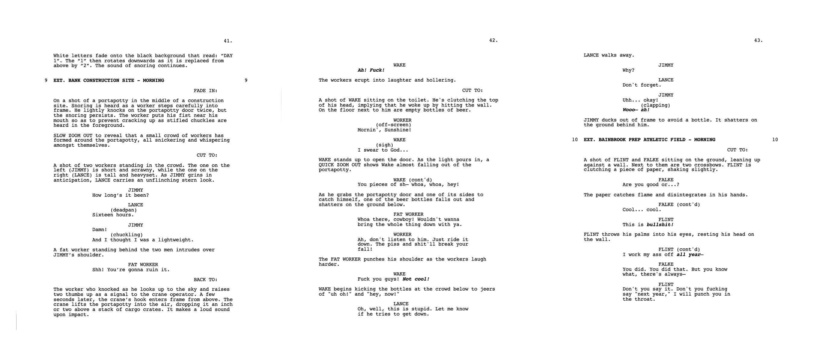
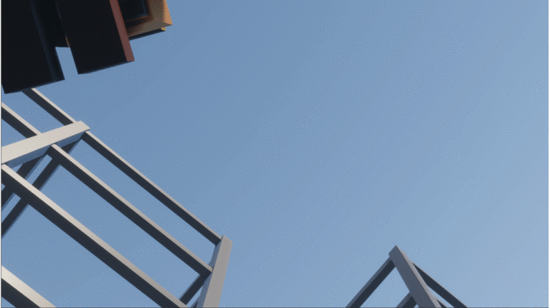
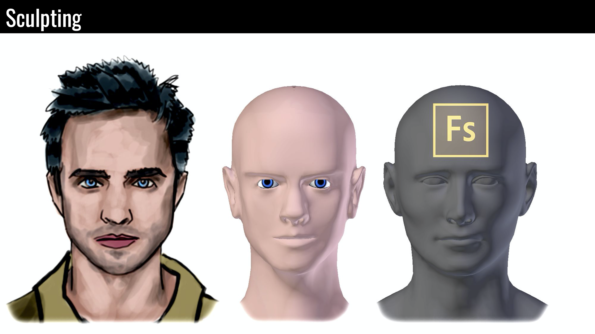

Script
Work on GATT always begins with the screenplay. Once our writer has finished working on the script it is distributed to all of our voice actors.
Storyboard
Instead of a conventional storyboard, we use simple colored boxes and virtual cameras to both layout and storyboard our scenes at the same time. This form of 3d storyboard helps identify what is and isn't working on screen and serves as a good foundation for the animation process.
Modelling
After the character concept art has been created, we use a freely available character creation software such as Adobe Fuse to produce a basic human template model. This template is then taken into Blender for a substantial amount of sculpting and hand-painted texturing to transform it into a character that resembles our initial concept.
Motion Capture
Motion capture is a huge component of our animation process. Featured here is Rigved lip syncing Wake's lines with 46 blue tracker dots painted on his face. These trackers help bring Rigved's performance into Blender and then can be retargeted onto any character's face.